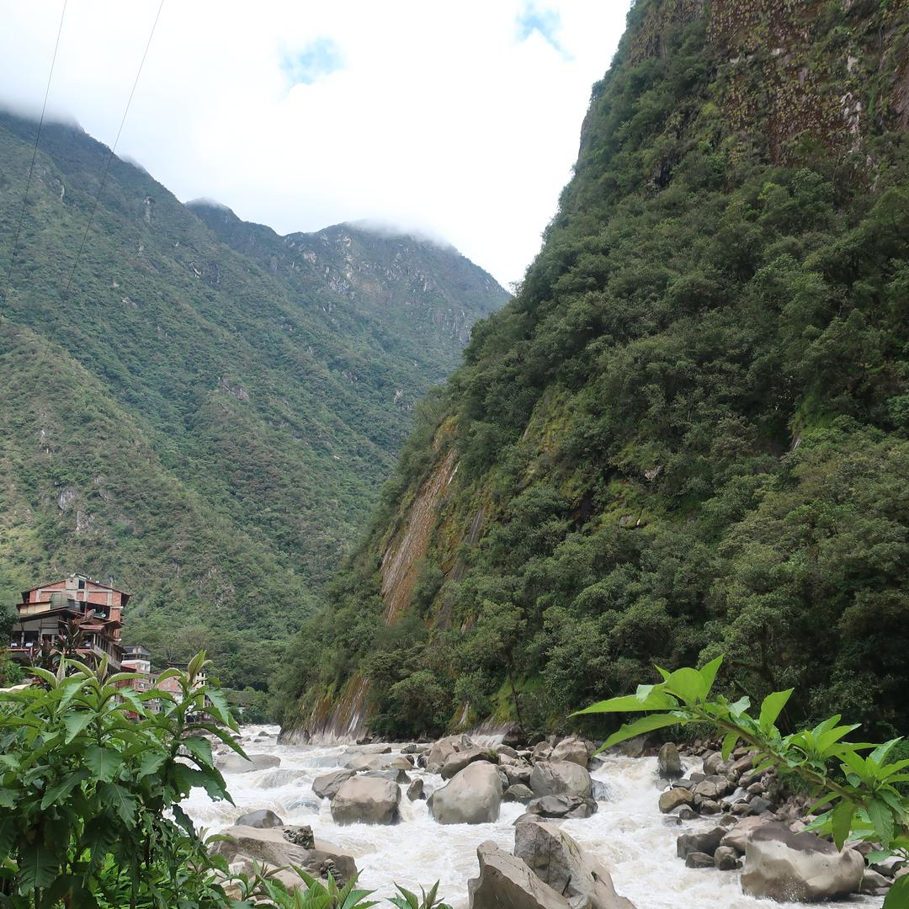
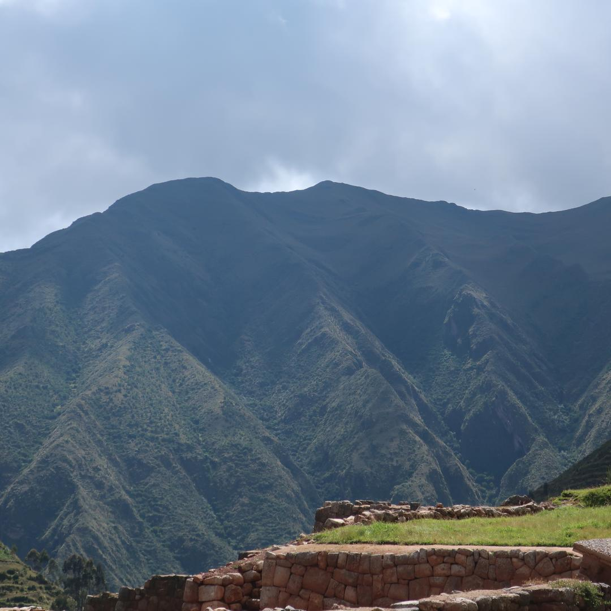
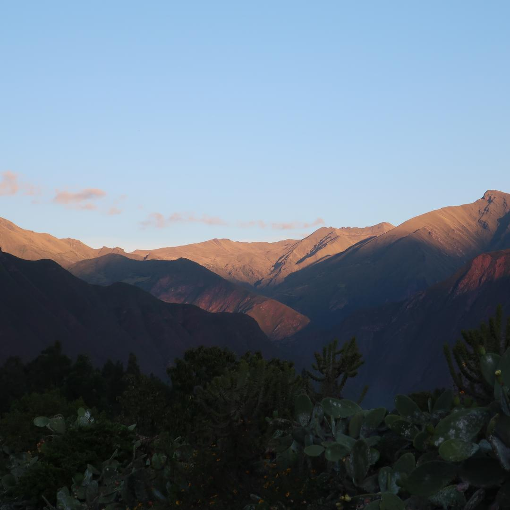
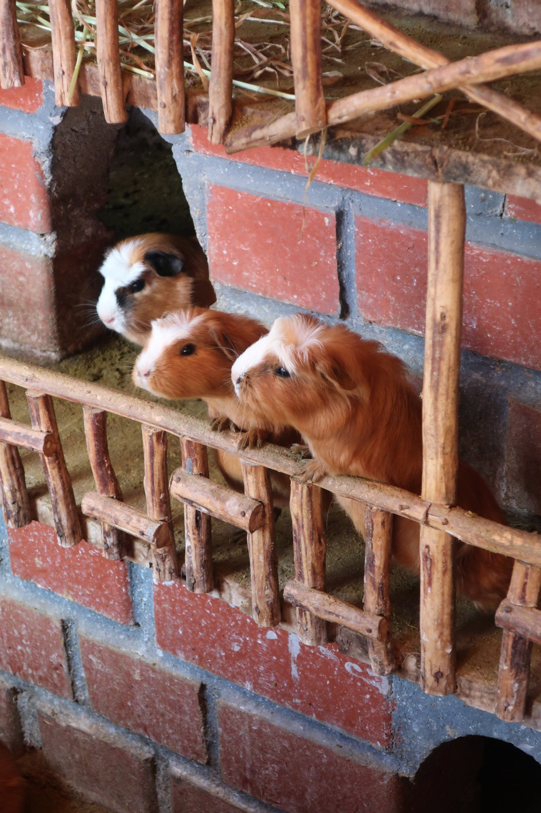
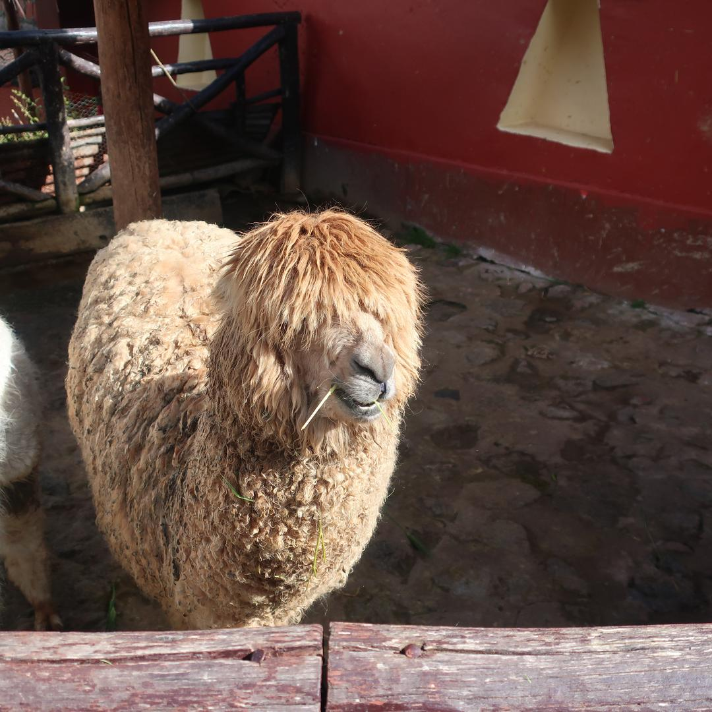
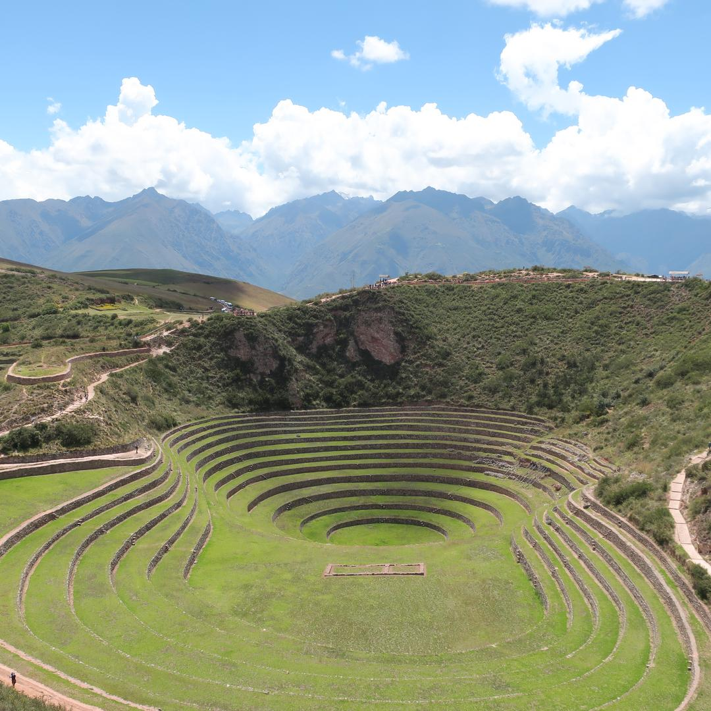
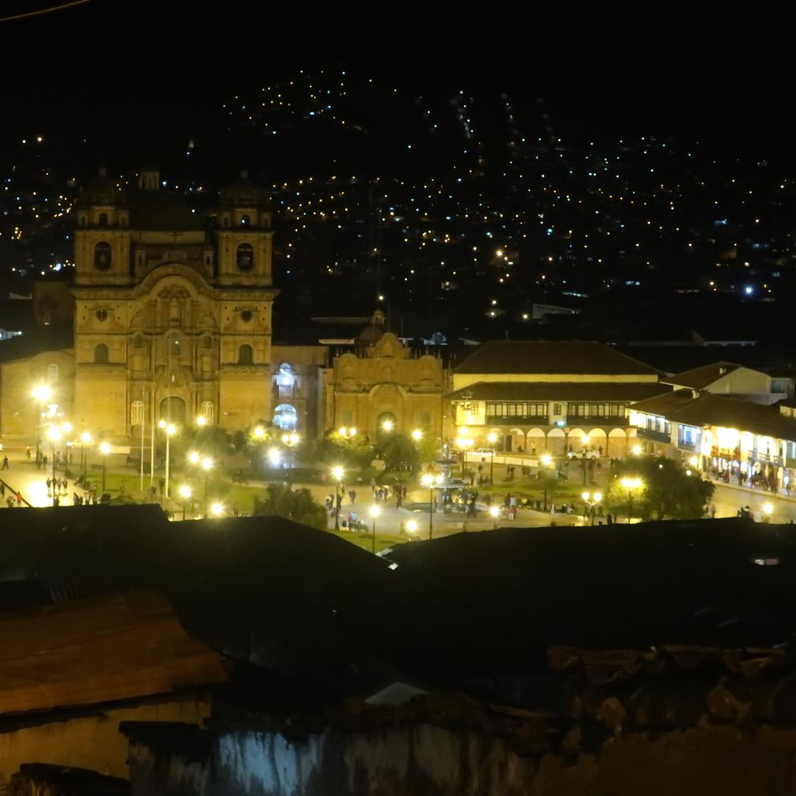
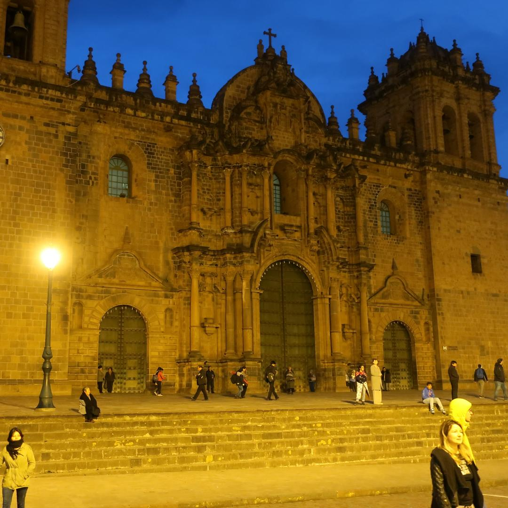
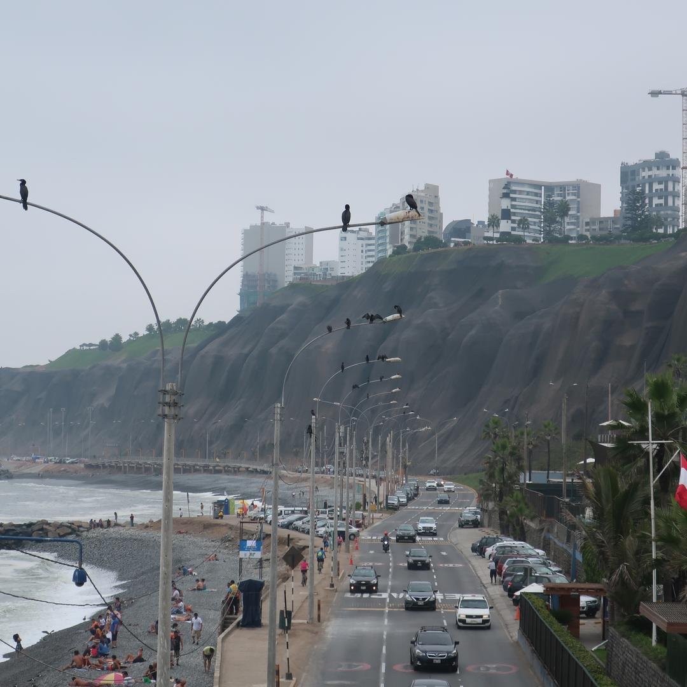
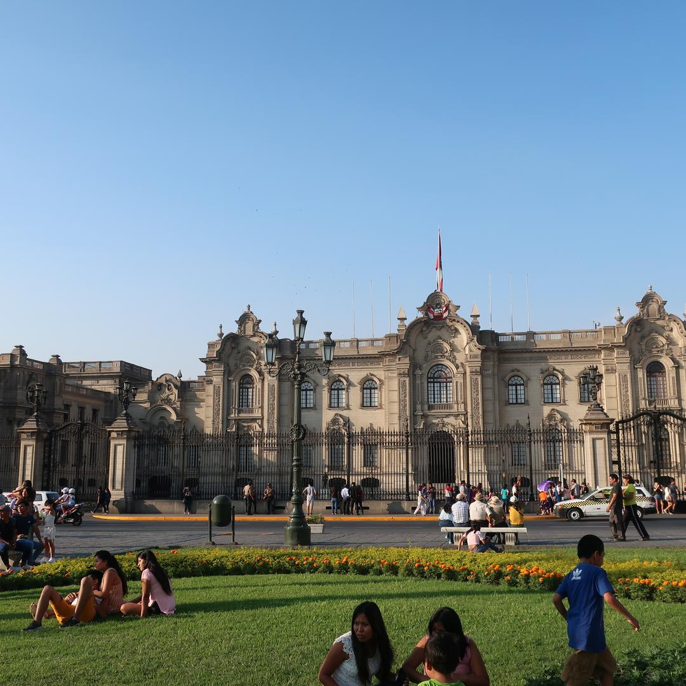

Discovering Peru: Our Week-Long Adventure in April 2019

In April 2019, we spent an unforgettable week in Peru, immersing ourselves in the vibrant culture and ancient wonders of this South American gem. Our journey began in the bustling capital, Lima, where we explored its lively neighborhoods, historic sites, and tasted the renowned Peruvian cuisine.
We then traveled to Cusco, the former heart of the Inca Empire, where we marveled at its cobbled streets, colorful markets, and rich history. From Cusco, we embarked on a breathtaking train journey with Inca Rail to the Sacred Valley, visiting the impressive ruins of Ollantaytambo, a fortress showcasing Incan ingenuity.
Our adventure culminated with a visit to the awe-inspiring Machu Picchu, where we hiked among the ancient ruins, taking in the mystical atmosphere and stunning views. This journey through Peru was a mesmerizing blend of history, adventure, and culture, leaving us with unforgettable memories of one of the world's most iconic destinations.










 Bordeaux
Bordeaux
 Tallin & Riga Christmas Markets
Tallin & Riga Christmas Markets
 Barcelona, Vic & Girona
Barcelona, Vic & Girona
 Skopje, North Macedonia
Skopje, North Macedonia